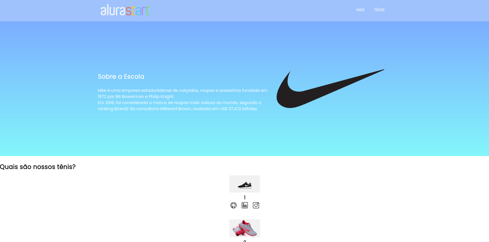
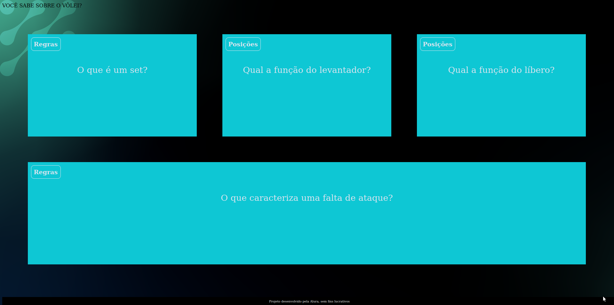

Meus projetos

Explorando os Tênis da Nike no Visual Studio Code
O projeto foi desenvolvido utilizando HTML, CSS e JavaScript, aproveitando as funcionalidades do Visual Studio Code para estruturar e organizar o conteúdo de forma eficiente. A interface é responsiva, garantindo que os usuários tenham uma boa experiência de navegação em qualquer dispositivo.

O projeto foi desenvolvido utilizando HTML, CSS e JavaScript, aproveitando as funcionalidades do Visual Studio Code para organizar e estruturar o conteúdo de forma clara e acessível. A interface é responsiva e visualmente atraente, garantindo uma experiência de navegação agradável em qualquer dispositivo.

Fundamentos e Regras do Voleibol no Visual Studio Code
O projeto foi desenvolvido utilizando HTML, CSS e JavaScript, aproveitando as funcionalidades do Visual Studio Code para facilitar o desenvolvimento e a organização do código. A interface é responsiva, garantindo uma boa experiência tanto em dispositivos móveis quanto em desktops.